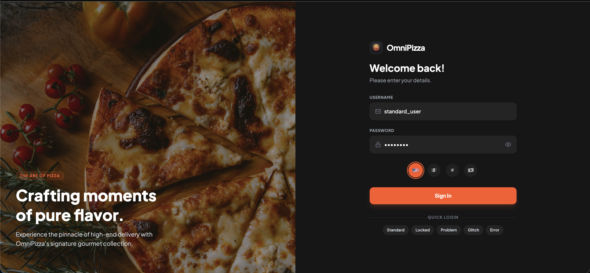
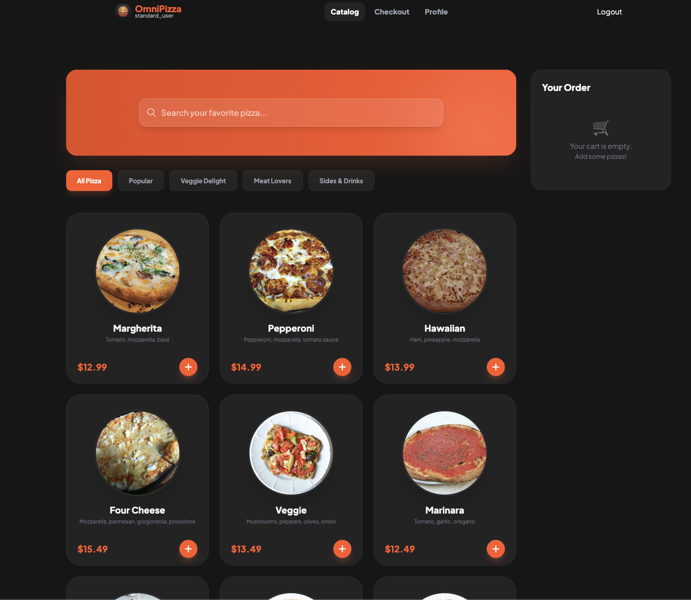
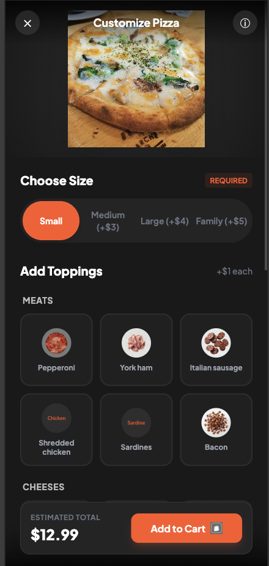
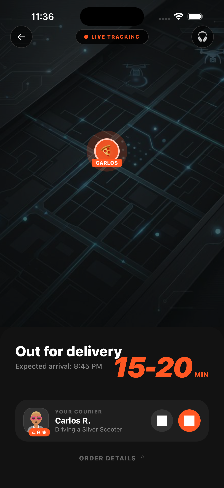

Live Deployments (Render)
Mobile App Releases
Pre-built binaries are published as
GitHub Releases via the
Build Mobile Apps workflow (manual dispatch on
workflow_dispatch).
Android APK
Release APK ready to sideload on any Android device or emulator.
omnipizza-release.apk— install via adbomnipizza-debug-androidTest.apk— for Appium instrumented runs
adb install omnipizza-release.apkiOS Simulator App
Simulator build (iphonesimulator SDK) zipped as
OmniPizza-Simulator.zip.
- Unzip and install into the running simulator
- Supports
omnipizza://deep links
xcrun simctl install booted OmniPizza.appArchitecture
Feature Slices
Web and mobile are organized around feature modules instead of only technical folders.
authcatalogcheckoutcountryprofileorderSuccess
Design Patterns
Both clients use the same practical separation of concerns to keep changes local and automation-friendly.
- Repository layer for API access
- Use-case layer for orchestration and validation
- Thin UI pages and screens
Testing Strategy
The repo keeps API validation and component validation inside the project, while atomic flow orchestration is intended for external runners.
- Vitest API tests in
tests/ - Cypress component tests in
frontend/cypress/component/ - External atomic runners: Playwright, Appium, Gatling
- Mobile atomic entry via
omnipizza://deep links
Platform Highlights
Eliminate Flaky Tests
Test with a variety of specialized users that deterministically reproduce specific edge cases and errors. Simplify your QA automation by reliably triggering edge cases such as network delays, empty data, or random checkout failures without complex backend mocks.
- standard_user: Normal flow (pw: pizza123)
- locked_out_user: Login fails deterministically
- problem_user: $0 prices + broken images
- performance_glitch_user: API delay (~3s)
- error_user: Random checkout error (~50%)

Multi-Market Simulation & Pricing
Switch between regions directly from the login screen to validate localization, dynamic pricing, and market-specific flows dynamically.
- Mexico (MXN): Tip optional, requires "colonia", Spanish (es)
- United States (USD): Tax applied, requires "zip_code", English (en)
- Switzerland (CHF): Multi-lingual toggle DE/FR
- Japan (JPY): No decimal pricing, requires "prefectura", Japanese (ja)

Multi-platform & Rotatable
OmniPizza was built to be fully responsive. It comes with a React PWA web app and an Expo React Native iOS app.
- Stable Selectors: All interactive elements include
data-testidattributes uniformly across platforms. - UI-only Payment form: Credit Card data is completely decoupled from backend, purely for UI testing.
- Dynamic Forms: Checkout steps adapt based on selected market configuration.
- Rotation Ready: Mobile views respond gracefully to landscape/portrait orientation switches.


API Documentation
The backend exposes full OpenAPI documentation via Swagger UI and ReDoc.
Required Request Headers
X-Country-Code: MX | US | CH | JP
X-Language: en | es | de | fr | ja
Authorization: Bearer <token> (after login)Session Setup Routes
POST /api/store/market
POST /api/cart # seed cart items
GET /api/cart # enriched cart (+ X-Country-Code)
POST /api/session/reset
GET /api/session
Authorization: Bearer <token> (reuse app token)Run Locally
Backend Environment
cd backend
python3 -m venv venv
source venv/bin/activate
pip install -r requirements.txt
python3 main.pyWeb Application
cd frontend
pnpm install
VITE_API_URL=http://localhost:8000 pnpm devMobile Application (Expo / RN)
cd frontend-mobile
pnpm install
pnpm ios # or pnpm androidAPI Tests (Vitest)
cd tests
pnpm install
pnpm test # Run all tests
pnpm test:ui # Interactive UI runnerWeb Component Tests (Cypress)
cd frontend
pnpm install
pnpm test:ct
pnpm test:ct:openAutomation Notes
-
/api/pizzasrequiresX-Country-Codeheader for market pricing. - Use the test users to validate reliability and chaos behaviors.
-
All interactive elements have
data-testidattributes for stable selectors. - Checkout form fields are dynamic per market — ensure automation handles conditional rendering.
-
Atomic state setup belongs in external runners and uses the public
session routes, not a separate
/testnamespace. -
Cart hydration: Seed cart via
POST /api/cart, then navigate to/checkout— both web and mobile auto-fetchGET /api/carton load and populate the cart store. -
Web atomic entry: Navigate directly to
/checkout,/catalog, or any protected route after injecting the auth token intolocalStorageviapage.addInitScript(). Checkout fetchesGET /api/cartautomatically when the local cart is empty. See ATOMIC_WEB_TESTING.md. -
Mobile atomic entry: Open any screen directly via
omnipizza://deep links after API hydration. PassaccessToken=<jwt>to inject auth at deep link time and bypass the login screen entirely. See ATOMIC_MOBILE_TESTING.md. - The mobile release workflow is manual-dispatch based and creates a GitHub Release after building Android and iOS simulator artifacts.
Web Atomic Entry (Playwright)
// 1. Login + seed cart via API
const { access_token: token } = await (
await request.post("/api/auth/login", { data: { username: "standard_user", password: "pizza123" } })
).json();
await request.post("/api/cart", {
headers: { Authorization: `Bearer ${token}`, "X-Country-Code": "MX" },
data: { items: [{ pizza_id: "pepperoni", size: "large", quantity: 2 }] },
});
// 2. Inject token into localStorage before page load
await page.addInitScript(({ token }) => {
localStorage.setItem("omnipizza-auth",
JSON.stringify({ state: { token, username: "standard_user", behavior: null }, version: 0 }));
localStorage.setItem("omnipizza-cart",
JSON.stringify({ state: { items: [] }, version: 0 })); // empty → API hydration
}, { token });
// 3. Navigate directly — Checkout fetches GET /api/cart automatically
await page.goto("/checkout");
await expect(page.getByTestId("view-order-summary")).toBeVisible();Mobile Deep Links
# Reset session before test suite
xcrun simctl openurl booted "omnipizza://login?resetSession=true"
# Open Checkout with API-seeded cart + injected token (no login needed)
adb shell am start -W -a android.intent.action.VIEW \
-d "omnipizza://checkout?market=MX&lang=es&hydrateCart=true&accessToken=$TOKEN" \
com.omnipizza.app
# Open Pizza Builder with specific pizza + size
xcrun simctl openurl booted \
"omnipizza://pizza-builder?pizzaId=pepperoni&size=family&market=US"
# Open Order Success with order ID
xcrun simctl openurl booted "omnipizza://order-success?orderId=12345&market=JP"Project Documentation
Repository Docs
Primary operational docs live in the repository root and docs/.
Product and Design Notes
Product, design, and tech stack references live under documents/.